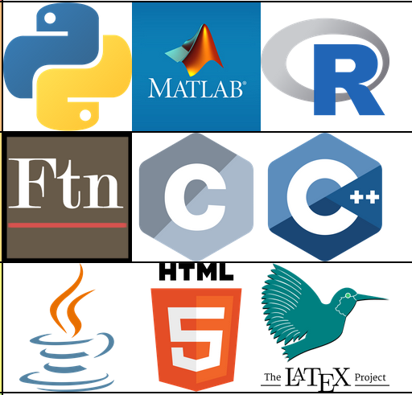
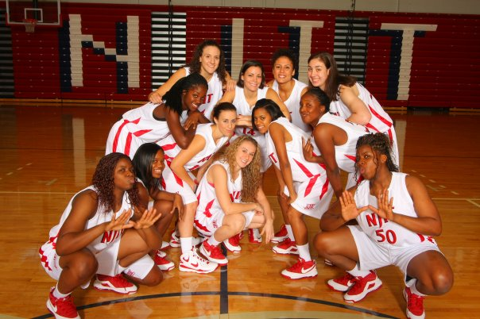

Ivana Seric
Sr. Product Scientist at Teamworks
See my LinkedIn page for more up-to-date information.
Background & Expertise
Sports Analytics
I began my career in sports analytics with the Philadelphia 76ers, working at the intersection of basketball operations and data science. This profile, produced by Bloomberg Technology's Aki Ito and recorded by Tom Connors and David Nicholson, offers a look at that work.
Data Visualization
Data visualization is central to how I communicate insight — a
well-designed visual can answer a question before a single model is built. I build
interactive visualizations with D3.js to make complex
analyses accessible to technical and non-technical audiences alike.
See examples on my Data Viz blog
Computational Fluid Dynamics
My graduate research focused on Computational Fluid Dynamics (CFD), combining mathematical modeling, numerical methods, and scientific visualization to study complex physical systems.
Mathematical Modeling
I have a strong foundation in building models grounded in first principles. My doctoral research examined ferrofluid behavior through a reduced-order model coupling fluid dynamics with magnetic fields — work with potential applications in medicine and imaging.

Programming
Over the course of my career, I've worked extensively across Fortran, C, C++, MATLAB, R, Python, HTML, CSS, and JavaScript, picking up the tools a given problem calls for. I continue to build on my front-end expertise, including React.

Basketball
My background as a competitive athlete shapes how I approach my work:
discipline, resilience, and performing under pressure. I played from age seven through
the collegiate level, representing Croatian youth national teams and New Jersey
Institute of Technology.
Go Highlanders!
Education
Ph.D. Mathematical Sciences: Applied Mathematics
New Jersey Institute of Technology
Thesis:
Direct computations of Marangoni-induced flows and contact line
dynamics using a volume of fluid method in 3D
B.S. Mathematical Sciences: Applied Mathematics
New Jersey Institute of Technology
Concentration: Applied mathematics
Capstone project:
Instability of gravity-driven flow of liquid crystal films